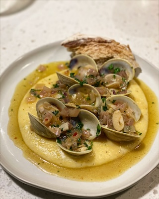

Clams and Polenta

Description
Tender clams sautéed in a garlicky white wine sauce served over creamy polenta. This elegant yet comforting dish brings together Italian-American flavors in one beautiful plate.
Ingredients
Polenta:
- 1 cup polenta (cornmeal)
- 4 cups water or chicken broth
- 2 tbsp butter
- ½ cup grated Parmesan cheese
- Salt to taste
Clams:
- 2-3 lbs littleneck clams, scrubbed
- 4 garlic cloves, thinly sliced
- ½ cup white wine
- 2 tbsp olive oil
- 2 tbsp butter
- ¼ tsp red pepper flakes
- Fresh parsley, chopped
- Lemon wedges
Steps
- Make the polenta: Bring water/broth to a boil, slowly whisk in polenta. Cook on low for 20-25 minutes, stirring often. Stir in butter and Parmesan. Season with salt.
- While polenta cooks, heat olive oil and butter in a large skillet.
- Add garlic and red pepper flakes, sauté for 30 seconds.
- Add white wine and bring to a simmer.
- Add clams, cover, and cook for 5-8 minutes until clams open (discard any that stay closed).
- Spoon creamy polenta into bowls, top with clams and sauce. Garnish with parsley and lemon.
Home